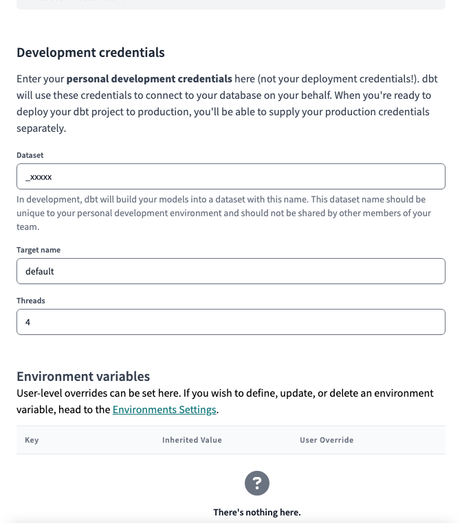
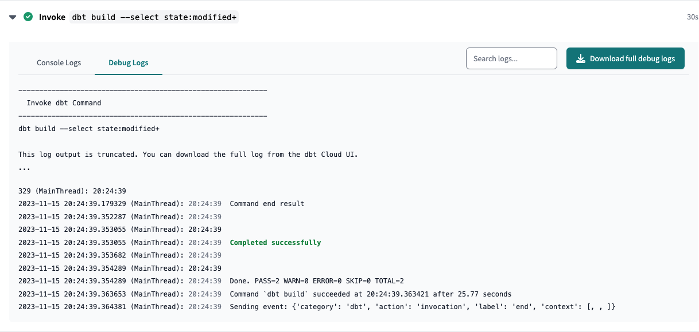

Welcome to the TEAMster contributing guide
Read our Code of Conduct to keep our community approachable and respectable.
In this guide you will get an overview of the contribution workflow from creating a branch, creating a pull request, reviewing, and merging the pull request.
Here are some resources to help you get started with open source contributions:
Project structure
All of our source code is located under the src/ directory.
src/teamster/ contains all of our Dagster code, which powers our data
orchestration.
src/dbt/ contains all of our dbt code, which is organized by
project.
dbt Projects
kipptaf is the homebase for all CMO-level reporting. This project contains
views that aggregate regional tables as well as CMO-specific data. This is the
only project that dbt Cloud is configured to work with.
kippnewark, kippcamden, kippmiami, and kipppaterson contain regional
configurations that ensure their data is loaded into their respective datasets.
Other projects (e.g. powerschool, deanslist, iready) contain code for
systems that is used across multiple regions. Keeping these projects as
installable dependencies allows us to maintain the code in one place and use it
across as many projects as needed.
Account setup
GitHub
To contribute on GitHub, you must be a member of our Data Team, and your ability to approve and merge pull requests depends on your membership in one of these subgroups:
Google Workspace
To access our BigQuery project and its datasets, you must be a member of our TEAMster Analysts KTAF Google security group.
dbt Cloud
Dataset
When you first login to dbt Cloud, you will be asked to set up Development credentials.
dbt will create a development "branch" of the database for every user, and it will name datasets using a prefix that is unique to you.
By default, this is your username, but please prefix it with an underscore ( _
) to avoid cluttering up our BigQuery navigation. BigQuery will hide any
datasets that begin with an underscore from the left nav.

sqlfmt
To format our SQL code, we use sqlfmt, an uncompromising SQL query formatter that provides one way to format SQL and works with Jinja templating.
To confirm that dbt Cloud is set up to use sqlfmt:
- Make sure you're on a development branch. Formatting isn't available on main or read-only branches.
- Open a
.sqlfile and click on the Code Quality tab. - Click on the </> Config button on the right side of the console.
- In the code quality tool config pop-up, you have the option to select sqlfluff or sqlfmt.
- To format your code, select the
sqlfmtradio button. - Once selected, go to the console section (located below the File editor) and select the Format button.
- This button auto-formats your code in the File editor. Once you've auto-formatted, you'll see a message confirming the outcome.
Make Changes
Folder structure & file names
Folder structure is extremely important in dbt. It should reflect how the data flows, step-by-step, from a wide variety of source-conformed models into fewer, richer business-conformed models.
Creating a consistent pattern of file naming is crucial in dbt. File names must be unique and correspond to the name of the model when selected and created in the warehouse.
We recommend putting as much clear information into the file name as possible, including a prefix for the layer the model exists in, important grouping information, and specific information about the entity or transformation in the model.
Staging
Modular building blocks from source data
- Folder structure: ...
- File naming convention:
stg_{source}__{entity}.sql
Intermediate
Layers of logic with clear and specific purposes, preparing our staging models to join into the entities we want
- Folder structure: subdirectories by area of business concern
- File naming:
int_{business concern}__{entity}_{verb}.sql - business concerns:
assessmentssurveyspeople
- verbs:
pivotunpivotrollup
Marts
bringing together our modular pieces into a wide, rich vision of the entities our organization cares about
Create a branch
Make your changes
...
Commit your changes
Open a pull request
When you're finished making changes, create a Pull Request ("PR").
- On dbt Cloud, click
- On the GitHub page that pops up, click "Create pull request"

- Fill in the "Summary & Motivation" section of the pull request template and click "Create pull request".
Code review
Once created, Zapier will create a task for your pull request in our Teamster Asana Project.
- Find yours by the title or number
- Update the due date and assignee
- Ensure that you are a follower on the task
GitHub will automatically assign default reviewers based on the location of the code changes submitted:
| Filepath | Default Approvers |
|---|---|
src/dbt/kipptaf/models/extracts/ |
Analytics Engineers |
src/teamster/ |
Data Engineers |
docs/ |
Data Team |
| All other directories | Admins |
A series of automatic checks will then run on the code that you submitted.
Resolving merge confilcts
If you run into any merge issues, checkout this git tutorial to help you resolve merge conflicts and other issues.
Trunk
Trunk is a tool that runs multiple "linters" that check for common errors and enforces style.
| Language | Linter(s) |
|---|---|
| SQL | SQLFluff |
| Python | Ruff |
What if I can't fix the issue?
Find another place to work!
dbt Cloud
dbt Cloud will create branch a dataset for your pull request on BigQuery and attempt to build the modified files.
If there are any issues with your code, the check will fail, and you can find the reasons by:
- Clicking on the
Detailslink - Expanding the Invoke
dbt build ...section - Selecting Debug Logs

- We may ask for changes to be made before a PR can be merged, either using suggested changes or pull request comments. You can apply suggested changes directly through the UI. You can make any other changes in your fork, then commit them to your branch.
- As you update your PR and apply changes, mark each conversation as resolved.
Your PR is merged
Congratulations 

Once your PR is merged...
- GitHub updates Dagster
- Dagster scans for code changes every 5 minutes
- Dagster will launch a run to update all changed models